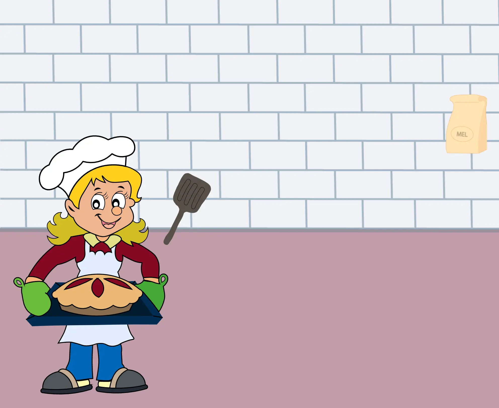
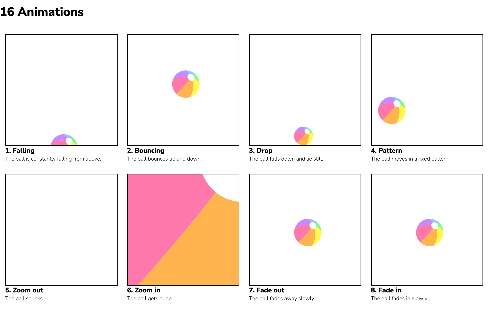
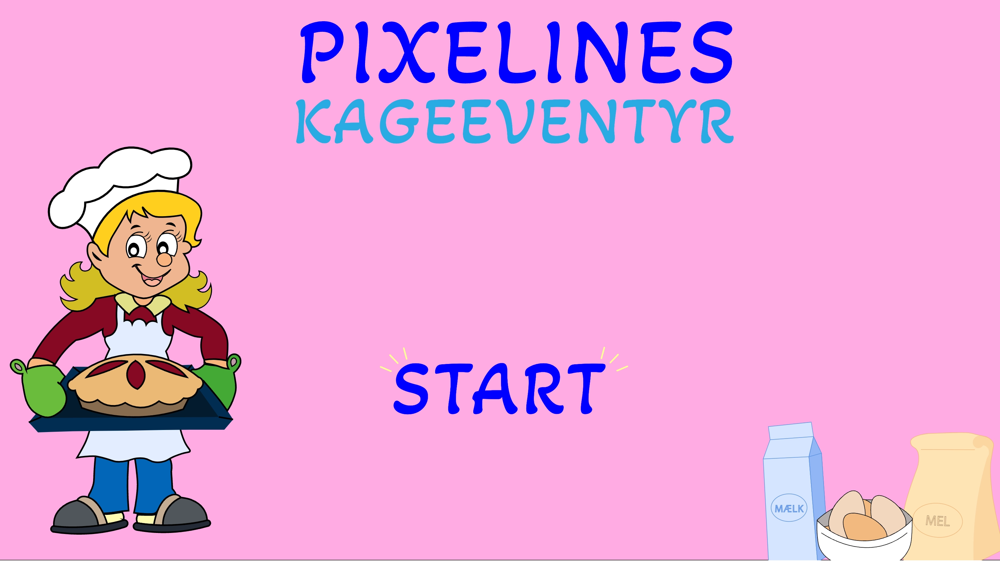
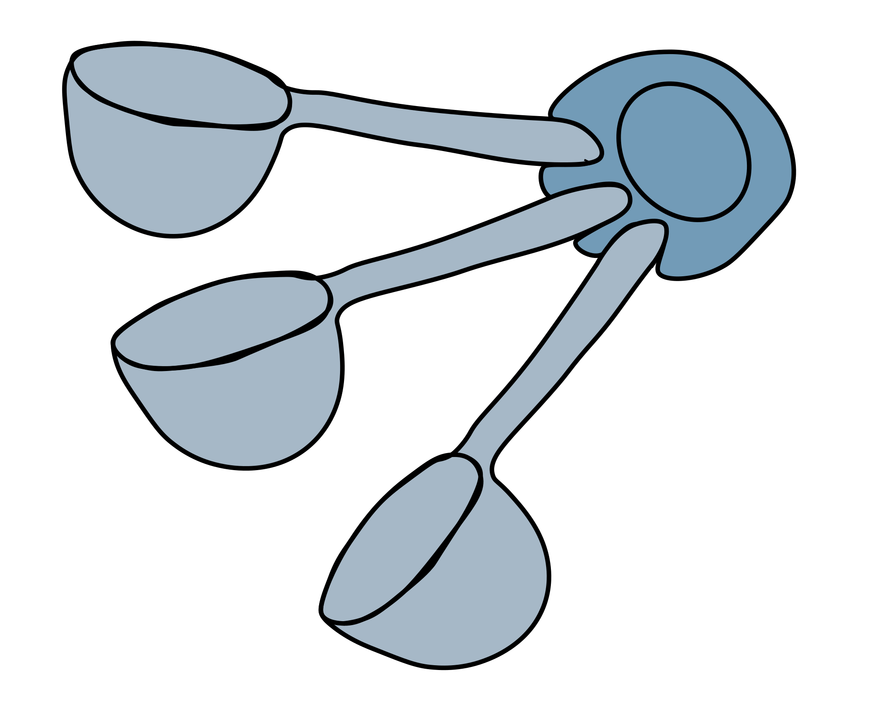
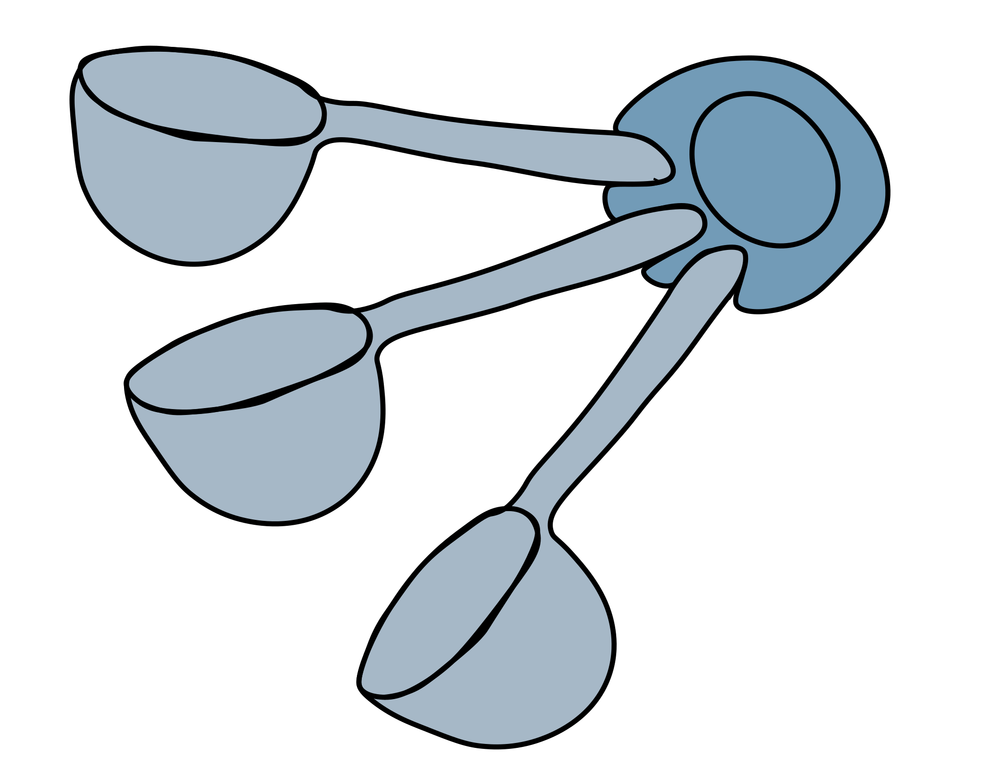

04_animation
Tema beskrivelse:
I dette tema blev vi introduceret til programmeringssproget JavaScript, der anvendes til at kode dynamiske websites. Temaet fokuserer på at kombinere JavaScript med CSS- animationer for at skabe et lille spil. vi fik derfor mulighed for at udvikle dit eget spilkoncept og idé, hvor vi selv designede alle elementer og kodet spillet fra bunden. Temaet omfatter analyse af spildesign og undersøger, hvordan designelementer som UI (brugergrænseflade), figurdesign, baggrund og kompositionsteknikker engagerer brugeren. vi fik udvikle vores eget spildesign efter moderne konventioner og tegne grafikken til spillet i Adobe Illustrator. Gennem arbejdet med vores eget spil lærte vi at arbejde med aktivitets- og statemachine-diagrammer, der bruges til at planlægge mere komplekse interaktive flow. De principper, vi lærte inden for CSS og JavaScript i dette tema, gav os en solid baggrund, som vi kunne bygge videre på under uddannelsen for at udvikle mere avancerede websites.
I denne opgave blev vi udfordret til at eksperimentere med forskellige animationer og lære hvordan man kunne få ting til at bevæge sig på menge forskellige måder. Vores mål var at skabe unikke bevægelser for hver bold i de individuelle bokse.
Klik her eller på billedet for at se opgaven "16 aniamtioner"I denne opgave skulle vi udvikle et spil og en hjemmeside til det spillet. Inden vi skulle til at sætte spillet op, skulle lave en masse forarbejde, som skulle gå op i en højere endhed i sidste ende. vi blev sat til at lave elementer til selve spillet inde i illustrator.
Klik her eller på billedet for at se mit spilGalleri
 

De figurer, der præsenteres lige ovenfor, er alle skabt ved hjælp af Illustrator. Illustrator er et omfattende program, der ofte anvendes til design af logoer, ikoner, illustrationer, typografi og forskellige former for grafiske elementer. Programmets alsidighed gør det til en værdifuld ressource inden for grafisk design og illustration.